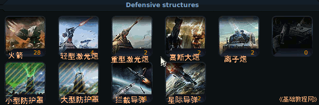
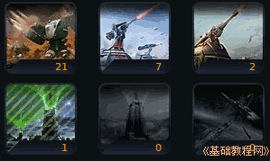
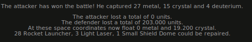

Ogame 银河帝国游戏新手入门
作者：TeliuTe 来源：基础教程网
在自己的星球上，可以构建防御设施；
1）进入 http://ogame.org，点右上角红色的“Login”登录；
2）在出来的登录框中，依次选择自己的星球，输入用户名、密码后点“Login”登录；

3）在左侧的列表中，点击第七个“Defense”防御链接；
4）在右侧出来各种设施图标，有火箭发射装置，激光炮、离子炮和导弹等；

5）发展初期，不需要太多的防御设施，造一些火箭和轻激用来对付偶然的打动者，还可以建一个小型防护罩；

6）高斯炮和离子炮，可以对付一些大型的飞船战舰，用于加强星球的防御；
7）防护罩会在其他设施全部被破坏时，起到最后的防御作用，但一般也坚持不了多久；
8）导弹分为拦截和攻击两种，前者只能拦截来犯的导弹，后者主要用于攻击星球的防御设施；
9）防御设施在一场战争结束后，有70%的设施可以自我修复，并且损坏的设施不会产生战场废墟；

本节学习了防御设施的基本操作，如果你成功地完成了练习，请继续学习下一课内容；
本教程由86团学校TeliuTe制作|著作权所有
基础教程网：http://teliute.org/
美丽的校园……
转载和引用本站内容，请保留作者和本站链接。